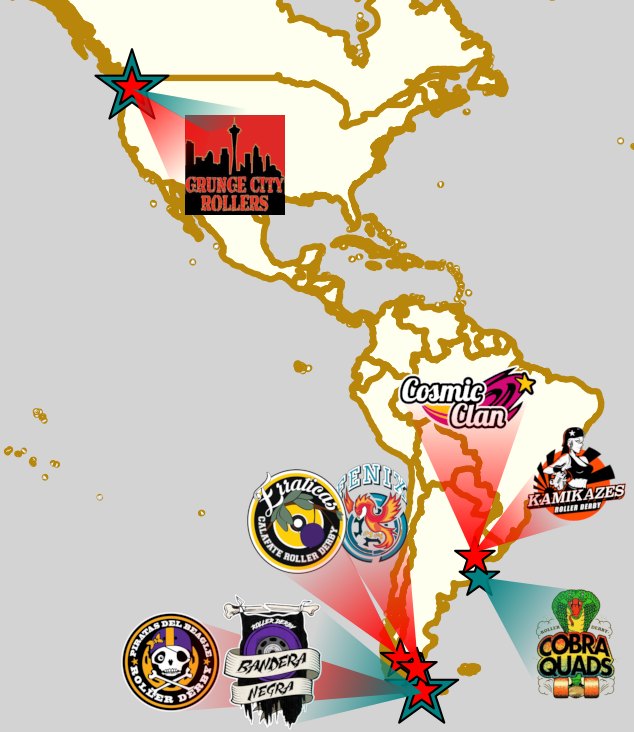
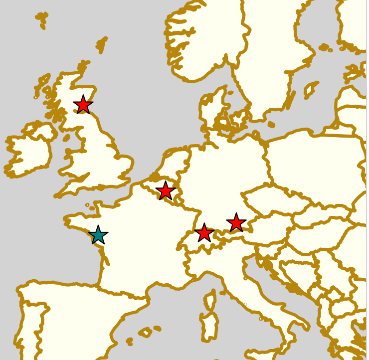

Weekend Highlights: 11 May 2019
The new "Weekend Highlights" feature returns, with a slight modification to our rule from last weekend. There are far too many valuable fixtures to cover all of them (especially in France and the UK, which tend to have multiple tournaments, bootcamps etc all on one weekend), but we also don't want to be so strict as to have just 1 per country. So, we'll be doing the following:
Two highlights a weekend - Sat + (All Weekend); and then a smaller one for Sunday.
Both highlights limited to 1 event per country, with an "extra" event allowed for a different kind of fixture (so, 1 tournament and 1 bootcamp), or if they involve Scottish leagues (since we are the Scottish Roller Derby Blog). Other notability might also allow the extra event - great posters, notable teams, etc.
In a bid to make this list as useful as possible, we've avoided links to Facebook except where noted. (Links to Teams are to non-Facebook resources - Instagram, or actual team pages - we'd strongly recommend that Teams get themselves an actual webpage [we can help host one if you need help]).
Locations are roughly organised East-West (with things before the weekend out sequence at the start).
Thurs+Fri: Badung, Bali, Indonesia
Hot Lava Rollers , Bali's first Roller Derby team, host a Launch Party this Friday, preceded by a Movie Night screening of iconic Roller Derby film, Whip It!. The Launch Party will provide not just a chance to learn more about Roller Derby and the team, but also the first opportunity to own Hot Lava Rollers' new merch.
Event starts: 1900 Thursday (Movie Night), 2000 Friday (Launch Party) Venue: Lust+Lost Chill Bar, Jalan Tanah Barak 6 Canggu, Kuta Utara, Badung, Bali, Indonesia
Sat: Lisbon, Portugal
Lisbon Grrrls Roller Derby host a single header against last years' Continental Cup hosts, As Brigantias of A Coruña, Spain.
Event starts: 1600 Saturday (doors open)
Venue: Pavilhão Municipal Desportivo Do Bairro Da Boavista, Lisbon, Portugal
Sat: Nottingham, UK
[FACEBOOK LINK] [FTS LINK (BC)] [FTS LINK (WFTDA)]
Nottingham Roller Derby hosts a triple header of sanctioned WFTDA and MRDA bouts! Starting with the next two fixtures in the British Championships MRDA-side Tier 1 North, including Scottish interest as Glasgow Men's Roller Derby face the hosts; the day ends with high-level WFTDA action, as Edinburgh's Auld Reekie play Milton Keynes' Rebellion.
- British Champs T1MN - Super Smash Brollers (Nottingham M) versus Glasgow Men's Roller Derby - New Wheeled Order ( M) versus Barrow Infernos (Barrow-in-Furness M)
- Auld Reekie Roller Derby (Edinburgh) versus Rebellion Roller Derby (Milton Keynes)
Event starts: 1100 Saturday (doors open)
Venue: Lee Westwood Sports Centre, Nottingham Trent University, Nottingham, UK
Sat-Sun: Ligugé, France
Les Broyeueses du Poitu host a two-day bootcamp for Officials and Skaters.
The first day will be a purely theoretical half-day for officials (referees & NSOs), whilst the second will be practical coaching for all, including scrimmage. The skater component of the bootcamp is aimed at beginner-intermediate level. Coaches: Charlie Coeur, Bernie, Cass Burn
Event starts: 1400 Saturday (Officials), 0900 Sunday (Skaters)
Venue: Complex Sportif Jean Paul Gomez, Avenue Paul Claudel, Ligugé, France
Sat: Newcastle Upon Tyne, UK
Tyne and Fear Roller Derby host the 4th round of the British Championships MRDA-side Tier 2. With Scotland's Bairn City Rollers currently in 3rd place in the leaderboards, this will be one of their tougher games, as they play the currently unbeaten #1 place North Wales.
- Tyne and Fear B (Newcastle MB) versus Knights of Oldham
- Bairn City Rollers (Stirling/Falkirk O) versus North Wales Roller Derby (Men)
Event starts: 1200 Saturday (doors open)
Venue: Benfield Sports Centre, Newcastle Upon Tyne
Sat: Pollestres, France
Coccyx Lexis of Perpignan host the mirror of the Trophée Chocolatine - the Trophée Pain au Chocolat! This one-day tournament sees teams from across the region of France where chocolate-filled pastry has its more popular name compete for the Cup. This is a full 5 team round robin, with 10 games across the day (given the timings, we think they're short-format of some kind).
Competing: - Coccyx Lexis (Perpignan) - DCCLM (Montpellier) - Castres Roller Derby - Roll'in Tarn (Albi) - Roller Derby Toulouse
These games are not listed in Flat Track Stats (due to format?)
Event starts: 0900 Saturday (doors open)
Venue: Avenue Pablo Casals, Pollestres, France
Sat-Sun: Charleroi, Belgium
Blackland Rockin' K-Rollers host an Intermediate/Advanced skating bootcamp, with an additional Officials bootcamp co-hosted.
All three sessions (skater/referee/NSO) will run in parallel, culminating in a scrimmage at the end of the Sunday. Coaches are: Candyman (referees); La mèche Tsé Tsé (NSO); Why So Sirus, Sally Broyeur & Trick or Threat (skaters).
Event starts: 13:00 Saturday
Venue: Centre Sportif de Roux, Rue Des Courturelles 2, Charleroi, Belgium
Sat-Sun: Amsterdam, Netherlands
Amsterdam Roller Derby host the 2019 edition of the Stroopwafel Cup, their annual WFTDA-rules tournament.
Competing this year are: - Amsterdam Roller Derby (A & B) - Roller Derby Hannover (A) - Les Sabordeuses (Brest B) - Pack of Destruction (Antwerp B)
Event starts: 0800 Saturday (doors open)
Venue: Weeren de sportp., Sportpark de Weeren, 5, Amsterdam, Netherlands
Sat-Sun: Emden, Germany
Maleficent Mermaids , Emden's, Junior Derby team, host the 2019 edition of their Junior Roller Derby bootcamp. This two day event will be entirely coaching on the Saturday, and scrimmage on the Sunday.
In parallel, there will also be an NSO workshop for interested attendees.
Event starts: 0900 Saturday
Venue: Pillauer Straße, Emden, Germany
Sat: Bergamo, Italy
[FACEBOOK LINK] [FTS LINK 1] [FTS LINK 2]
Crimson Vipers Roller Derby Bergamo host a double header, as they host a double header (slightly unusually, for one of the away teams...)
- Crimson Vipers (Bergamo) versus Black Thunders (Madrid)
- Harpies (Milan) versus Black Thunders (Madrid)
Event starts: 1500 Saturday (doors open)
Venue: Palestra Corridoni, Via Flores Mario, Bergamo
Sat: Borås, Sweden
Stitch City Rollers celebrate their 5th anniversary with an open day of Roller Derby events, including a chance to try the sport yourself (for over 16s).
Event starts: 1400 Saturday
Venue: Borås Skatehall, Armbågavägen 16, Borås, Sweden
Sat: Vienna, Austria
[FACEBOOK LINK] [FTS LINK 1] [FTS LINK 2] [FTS LINK 3]
Vienna Roller Derby host a triple header round robin, as their B team take on opponents from Germany and the Netherlands!
- Arnhem Fallen Angels (Arnhem, NL)
- Harbor Girls B (Hamburg/St Pauli, Germany B)
- Vienna Beasts (Vienna B)
Event starts: 1215 Saturday
Venue: AHS Theodor-Kramer, Theodor Kramer Straße 3, Vienna, Austria
Sat: Warsaw, Poland
[FACEBOOK LINK] [FTS LINK 1] [FTS LINK 2]
Warsaw Hellcats Roller Girls host an international double header, with both a WFTDA- and MRDA-gender bout. Both are exciting, as this is one of the first chances to see Riga's team play; and the men's National teams bout is one of the first such games of the current National teams season.
- Warsaw Hellcats versus Riga Roller Derby
- Polish Men's Roller Derby versus Team Denmark Men's Roller Derby
Event starts: 1400 Saturday (doors open)
Venue: Ursynowskie Centrum Sportu i Rekreacji, ZOS "Hawajksa"
Sat: Oulainen, Finland
Riverdale Rollers host the Division 1 final fixture for this season's Finnish National tournament.
- Kouvola Rock n Rollers (Kouvola) versus P-town Brawlers (Porvoo)
- Riverdale Rollers (Ylivieska) versus C-kaseti (Helsinki C)
Event starts: 1130 Saturday (doors open)
Venue: Jäähali Oulainen, Kotimarjalankatu 1, Oulainen, Finland
Sat: Keysborough, VIC, Australia
Kingston City Rollers and Westside Derby Dollz host a "Mixed Fixture" tournament series to give mixed (gender?) teams a regular set of games.
These bouts are not currently listed in Flat Track Stats.
Event starts: 1400 Saturday (doors open)
Venue: Springers Leisure Centre, 400 Cheltenham Road, Keysborough, VIC, Australia
Sat: Wellington, New Zealand
[FACEBOOK LINK] [FTS LINK 1] [FTS LINK 2]
Richter City Roller Derby hosts a double header of NZ derby.
- Richter City Roller Derby (Wellington) versus Whenua Fatales (Levin)
- West Coast Bombers (Wanganui) versus Remutaka (Upper Hutt/Remutaka region)
Event starts: 1600 Sat (doors open)
Venue: 101 Kilbirnie Crescent, Kilbirnie, Wellington, New Zealand
Guest Series: "The Road To Playoffs - May 2019 edition"
With the fourth WFTDA official rating and ranking of the season (https://wftda.com/rankings-april-30-2019/), we're keeping to our promise to update our "Road to Playoffs series".
") All the locations with teams in our top 100 (larger stars mean more than one team is in the list - for example, 2x4 and Sailor City in Buenos Aires)
All the locations with teams in our top 100 (larger stars mean more than one team is in the list - for example, 2x4 and Sailor City in Buenos Aires)
Speedy Convalesce, Head NSO of Mannheim's Delta Quads, as well as many other things, is here to help us better visualise what's likely to happen at Playoff selection. This ongoing series reports the ratings and rankings of the top 100 WFTDA teams, calculated as if we were at June 30th 2019 [the ranking which will be used to decide Qualifications and seedings into both WFTDA Playoffs, and the Continental Cups]. Whilst we can't predict the future, this will give the best guess of what teams need to do to qualify, based on what they've already done.
As well as attaining a minimum ranking, teams also need to play at least 4 bouts within the eligibility period (December 2018 to June 2019), and we'll be tracking their progress on this measure, too.
The list, updated for this month: (# is number of bouts contributing to the ranking, whilst #El is the number of bouts contributing to their eligibility for playoffs). We'll colour teams to indicate when they've played their minimum number of games for eligibility, but as yet, it's too early for anyone to have met this. We've eliminated any teams which have played less than 2 games since July 2018 here. Teams which have shifted rating (or entered the chart for the first time) since the last article are in BOLD ITALICS
| Rk. | Team | Continental Cup | # | Points | #El |
|---|---|---|---|---|---|
| 1 | Rose City Rollers | NA West | 6 | 1277.69 | 0 |
| 2 | Victorian Roller Derby League | NA West | 5 | 1274.92 | 0 |
| 3 | Gotham Girls Roller Derby | NA East | 4 | 1193.05 | 0 |
| 4 | Denver Roller Derby | NA West | 5 | 1187.67 | 0 |
| 5 | Arch Rival Roller Derby | NA West | 7 | 1135.02 | 0 |
| 6 | Angel City Derby | NA West | 7 | 946.85 | 1 |
| 7 | Crime City Rollers | Europe | 9 | 884.2 | 4 |
| 8 | Texas Rollergirls | NA West | 7 | 858.86 | 0 |
| 9 | Minnesota RollerGirls | NA West | 3 | 835.39 | 0 |
| 10 | Jacksonville Rollergirls | NA East | 6 | 817.81 | 0 |
| 11 | Montreal Roller Derby | NA East | 7 | 803.01 | 0 |
| 12 | Rainy City Roller Derby | Europe | 7 | 795.37 | 4 |
| 13 | 2x4 Roller Derby | NA East | 3 | 788.7 | 0 |
| 14 | Rat City Roller Derby | NA West | 4 | 773.87 | 0 |
| 15 | Bay Area Derby | NA West | 3 | 753.06 | 0 |
| 16 | Atlanta Roller Derby | NA East | 6 | 750.61 | 1 |
| 17 | London Rollergirls | Europe | 8 | 745.49 | 4 |
| 18 | Philly Roller Derby | NA East | 6 | 726.25 | 3 |
| 19 | Canberra Roller Derby League | NA West | 7 | 722.89 | 4 |
| 20 | Santa Cruz Derby Girls | NA West | 5 | 675.11 | 2 |
| 21 | Helsinki Roller Derby | Europe | 7 | 656.64 | 4 |
| 22 | Queen City Roller Girls | NA East | 3 | 644.23 | 1 |
| 23 | Arizona Roller Derby | NA West | 6 | 624.32 | 3 |
| 24 | Stockholm Roller Derby | Europe | 6 | 591 | 4 |
| 25 | Windy City Rollers | NA East | 5 | 587.98 | 3 |
| 26 | Ann Arbor Roller Derby | NA East | 8 | 577.21 | 6 |
| 27 | Houston Roller Derby | NA West | 5 | 561.7 | 5 |
| 28 | Dublin Roller Derby | Europe | 8 | 536.59 | 5 |
| 29 | Paris Rollergirls | Europe | 3 | 536.49 | 1 |
| 30 | Kallio Rolling Rainbow | Europe | 3 | 528.37 | 0 |
| 31 | Sun State Roller Derby | NA West | 7 | 525.78 | 4 |
| 32 | Naptown Roller Derby | NA East | 7 | 525.22 | 7 |
| 33 | Bear City Roller Derby | Europe | 3 | 521.3 | 1 |
| 34 | Boston Roller Derby | NA East | 11 | 514.58 | 7 |
| 35 | Blue Ridge Rollergirls | NA East | 4 | 504.84 | 2 |
| 36 | Team United Women's Roller Derby | NA West | 4 | 471.13 | 0 |
| 37 | Calgary Roller Derby | NA West | 4 | 458.14 | 0 |
| 38 | Madison Roller Derby | NA East | 6 | 453.9 | 3 |
| 39 | Rocky Mountain Rollergirls | NA West | 6 | 447.44 | 3 |
| 40 | Happy Valley Derby Darlins | NA West | 6 | 446.54 | 3 |
| 41 | Dock City Rollers | Europe | 4 | 444.79 | 1 |
| 42 | Columbia Quad Squad | NA East | 11 | 441.01 | 8 |
| 43 | E-Ville Roller Derby | NA West | 3 | 439.04 | 0 |
| 44 | Tiger Bay Brawlers | Europe | 3 | 433.05 | 0 |
| 45 | Middlesbrough Roller Derby | Europe | 4 | 432.51 | 1 |
| 46 | North Star Roller Derby | NA West | 9 | 422.64 | 6 |
| 47 | Central City Rollerderby | Europe | 6 | 419.46 | 3 |
| 48 | Detroit Roller Derby | NA East | 6 | 418.96 | 2 |
| 49 | Charlottesville Derby Dames | NA East | 5 | 415.47 | 2 |
| 50 | Birmingham Blitz Dames | Europe | 2 | 414.86 | 0 |
| 51 | Sacramento Roller Derby | NA West | 7 | 413.7 | 4 |
| 52 | Tri-City Roller Derby | NA East | 3 | 411.23 | 3 |
| 53 | Perth Roller Derby | Europe | 4 | 407.55 | 4 |
| 54 | Terminal City Rollergirls | NA West | 2 | 405.14 | 0 |
| 55 | Gem City Roller Derby | NA East | 4 | 402.03 | 4 |
| 56 | Sailor City Rollers | NA East | 2 | 386.74 | 0 |
| 57 | Royal City Roller Derby | NA East | 8 | 383.44 | 5 |
| 58 | Roc City Roller Derby | NA East | 4 | 382.75 | 3 |
| 59 | Tampa Roller Derby | NA East | 6 | 378.76 | 3 |
| 60 | V-Town Derby Dames | NA West | 4 | 375.31 | 3 |
| 61 | Brandywine Roller Derby | NA East | 2 | 369.27 | 2 |
| 62 | Antwerp Roller Derby | Europe | 8 | 362.99 | 4 |
| 63 | Ohio Roller Derby | NA East | 4 | 362.12 | 2 |
| 64 | Adelaide Roller Derby | NA West | 6 | 359.28 | 5 |
| 65 | Dub City Roller Derby | NA East | 6 | 346.43 | 3 |
| 66 | Toronto Roller Derby | NA East | 6 | 330.26 | 6 |
| 67 | Oklahoma Victory Dolls | NA East | 7 | 327.95 | 7 |
| 68 | Jet City Roller Derby | NA West | 3 | 327.72 | 0 |
| 69 | Orangeville Roller Girls | NA East | 7 | 321.71 | 4 |
| 70 | Tucson Roller Derby | NA West | 6 | 316.1 | 3 |
| 71 | Steel City Roller Derby | NA East | 8 | 312.48 | 8 |
| 72 | Grand Raggidy Roller Derby | NA East | 7 | 312.39 | 5 |
| 73 | Red Stick Roller Derby | NA West | 7 | 307.27 | 2 |
| 74 | Classic City Rollergirls | NA East | 5 | 301.31 | 1 |
| 75 | Rage City Rollergirls | NA West | 3 | 300.34 | 3 |
| 76 | Mother State Roller Derby | NA East | 2 | 298.89 | 2 |
| 77 | Ottawa Valley Roller Derby | NA East | 6 | 296.85 | 4 |
| 78 | No Coast Derby Girls | NA West | 6 | 296.2 | 3 |
| 79 | Pirate City Rollers | NA West | 4 | 293.46 | 4 |
| 80 | Gold Coast Derby Grrls | NA East | 8 | 279.69 | 6 |
| 81 | Cincinnati Rollergirls | NA East | 7 | 278.1 | 6 |
| 82 | Pikes Peak Derby Dames | NA West | 9 | 269.55 | 7 |
| 83 | Crossroads City Derby | NA West | 6 | 267.91 | 4 |
| 84 | Providence Roller Derby | NA East | 5 | 267.43 | 5 |
| 85 | North Texas Roller Derby | NA West | 2 | 266.89 | 2 |
| 86 | Greater Vancouver Roller Derby | NA West | 4 | 262.52 | 3 |
| 87 | Brewcity Bruisers | NA East | 7 | 262.22 | 5 |
| 88 | Humboldt Roller Derby | NA West | 5 | 255.99 | 4 |
| 89 | Assassination City Roller Derby | NA West | 5 | 252.15 | 4 |
| 90 | Kansas City Roller Warriors | NA West | 6 | 251.78 | 6 |
| 91 | Penn Jersey Roller Derby | NA East | 7 | 247.19 | 4 |
| 92 | Lehigh Valley Roller Derby | NA East | 4 | 245.38 | 2 |
| 93 | Downriver Roller Dolls | NA East | 4 | 243.4 | 3 |
| 94 | Connecticut Roller Derby | NA East | 2 | 243.04 | 1 |
| 95 | Duke City Derby | NA West | 9 | 235.67 | 6 |
| 96 | Kalamazoo Derby Darlins | NA East | 5 | 233.73 | 5 |
| 97 | Nottingham Hellfire Harlots | Europe | 2 | 233.15 | 0 |
| 98 | FoCo Roller Derby | NA West | 7 | 230.65 | 7 |
| 99 | Appalachian Roller Derby | NA East | 9 | 228.84 | 4 |
| 100 | Nashville Roller Derby | NA East | 6 | 228.38 | 5 |
[We plan to update this list each time WFTDA release a rating and ranking until Playoffs selections]
The biggest movements for the top of the chart have still to come, as this update, like the WFTDA Rating, does not include bouts in May - so The Big O is excluded. As a result, ironically, some of the most exciting movements this past few days are not reflected here at all - whilst almost all of the rest of the chart moves either due to changes in rating, or other teams moving around them.
A Positive Start to 2019 for BCR
2018 was a mixed year for Bairn City Rollers. Whilst some members of the league were busy; the league not as much. Although BCR had members involved in the Men’s Roller Derby World Cup covering Power of Scotland, Wales and Italy squads (read more about that here), each of their three teams at BCR (Women’s, OTA & Men’s) only managed 1 game each in the whole year.
Like many other leagues up and down the country, BCR saw quite a few members retire from Derby after years of involvement and even a couple move on to other leagues. With numbers shrinking, BCR looked towards recruitment and, after a positive meeting with GMRD, the two leagues decided to pool resources and started sharing one training session a week. This helped both leagues save on hall costs, whilst at the same time helping with numbers at training, allowing them to run better and more complex drills.
During those difficult times BCR were always looking forward and, with 2019 in mind, they decided to enter into British Champs for the second time, having previously competed in 2017. Unlike their previous entry to Champs as the Skelpies, this time around BCR decided to enter the OTA team. Again they find themselves in the MRDA-Tier 2 North, but this time as the only OTA team in the tier.
So far, BCR have already played their first two of five games in Champs. On February 9th they travelled down to Manchester to take on Knights of Oldham at the Thunderdome. After an early rise for most of the team to travel down they took the win, 209 to 108.
Fast forward to April 20th and again they were on the road down South, but this time to Middlesbrough to take on Teesside Skate Invaders (TSI). The last time BCR were in Champs, as the Skelpies, their last game of the tier was against TSI, where BCR lost by 20 points. This time around however BCR’s OTA took the win, 180 to 136.
Bairn City Rollers OTA Roster [Photo: Bairn City Rollers]
Next week, they will be road tripping to Newcastle to play current tier #1, North Wales Roller Derby Men's. Then, in June, they have a trip away to Wales to play Newcastle's Tyne and Fear B, before their final game of Champs at the end of June. BCR will be hosting the final game day of the tier in a double header at Grangemouth on June 29th where they will skate against The Inhuman League.
With two wins in Champs so far, BCR OTA sit third in their group with six points despite having played one less game than the teams second and first (thanks to an unbroken set of wins). Those two wins have led to a significant increase in BCR's Flat Track Stats Global ranking. BCR OTA are now ranked 3rd in Europe and 20th overall of all OTA teams on Flat Track Stats (FTS calls this selection "Co-Ed" still).
![British Champs Tier-2 MN Results Table (as of 3 May 2019) [Copyright: British Championships]](images/2019/05/bc_t2mn_3May2019.png)
British Champs Tier-2 MN Results Table (as of 3 May 2019) [Copyright: British Championships]
Whilst their wins in Champs have been a great start for their OTA team, BCR’s Central Belters have also started their year in winning ways. They have already gotten their first game of the year out of the way taking the win over GRD’s Maiden Grrders, 179 to 149. That means they have been unbeaten in seven consecutive games, stretching back to November 2015.
They're also starting to see their numbers increase from their recruitment drive, with new skaters and along with some transfers arriving as well. Along with those new faces, some old ones have reappeared as some retired skaters from other leagues have decided to pull their skates back on and have choose BCR to do just that.
Bairn City Rollers [Photo: Bairn City Rollers]
The good news doesn’t stop there: Bairn City Rollers have seen their skaters making it onto both Wales' and Power of Scotland's training squads for the Men’s Roller Derby World Cup 2020. There is also the possibility of a BCR member appearing on the Team Italy squad, with tryouts still taking place.
With more games penned for the rest of 2019 for their Women’s and OTA team, this year is starting to look like a good one for BCR and its members.
Their first home game of the season will be BCR’s final Champs game on the 29th of June: for more information head over to the event page here.
Weekend Highlights: 4/5 May 2019
Followers of the Blog will remember our regular feature rounding up all of the Roller Derby around the World.
Whilst we stopped this feature (due to both Facebook's own usability issues, and the sheer amount of work it required each week), we've introduced a scaled down "highlights" feature each week instead. For the last few weeks, this has been a "Facebook only" feature, mainly because most of the highlighted action in Roller Derby is built around Facebook Events.
However, as there are many (increasingly so) people who do not, and cannot, use Facebook, we're mirroring it here too (with some additional details to increase accessibility for those who can't access Events we reference).
This is an exceptionally busy weekend, and we're missing out many events here (including another big tournament in France) - we're trying to keep this readable by having 1 event per country (Australia only gets two because Tas v Vic has a great bout poster).
In a bid to make this list as useful as possible, we've avoided links to Facebook except where noted. (Links to Teams are to non-Facebook resources - Instagram, or actual team pages).
Sat-Sun: Aalborg, Denmark
Aalborg Roller Derby host the 2019 edition of The Northern Takedown (one of two events called the "TNT" in Roller Derby, the other being in Mexico in 2 weeks). As always, this TNT is run as a 5-teams round robin tournament.
Attending this year are:
- Rockcity Rollers (Eindhoven, Netherlands)
- Cologne Roller Derby (Cologne/Köln, Germany)
- Hulls Angels Roller Derby (Hull, UK)
- Belfast Roller Derby (Belfast, UK)
- Aalborg Roller Derby (Aalborg, Denmark)
Event starts: 9am Saturday
Venue: Nørresundby Idrætscenter Lerumbakken 11, 9400 Nørresundby
Sat: Oslo, Norway
Oslo Roller Derby hosts "The Challenge 2019", the return of their regular mini-tournament for its fifth iteration. As always, this event exists to give newer skaters additional experience, including actual tournament experience, and is open to attendees from across the world.
(This year, the three mixed teams are: "Blobfish Blockers", "Neon Nighthawks" and "Banana Slig Thugs", and will be playing two round-robin tournaments, one each day.)
Venue: Apalløkka Idrettshall Tjernveien 12, 0957 Oslo, Norway
Starts at: 11:30am Saturday and Sunday
Sat: Bideford, UK
North Devon Roller Derby hosts the first fixtures in this year's South West Season tournament, returning from last year.
The South West Season is a self-contained mostly-B-teams tournament for the south west of the UK.
- North Devon B versus Bath B
- SWAT B (Taunton/Exeter/Cullompton) versus Dorset B
Venue: Bideford College, Abbotsham Road, Bideford, Devon
Starts at: 10:30 Saturday
Sat-Sun, Nîmes, France
The Bones Breakers of Nîmes host a "European Tournament": a 4 team round robin, with competitors:
- Bones Breakers Roller Derby (Nîmes, France)
- Nottingham Roller Derby (Nottingham, UK)
- Auver'Niaks Roller Derby (Clermont-Ferrand, France)
- BSTRDs (Stockholm B) (Stockholm, Sweden)
Venue: Gymnase Condorcet Impasse Vivaldi, 30900 Nîmes
Event start: 9:30am, Saturday
Sat-Sun: Dresden, Germany
Roller Derby Dresden host a huge number of useful bootcamps, and this weekend is their first contribution for 2019, with three events in one weekend!
-
Dresden Derby Days Gold Edition (2019) [FACEBOOK LINK]
Skater bootcamp coached by Dédé Froquée (Team France 2018/Crime City Rollers) and Bonnie Tagueule (Paris Roller Derby)
-
Dresden Derby Days Zebra Edition (2019) [FACEBOOK LINK]
On-skates officiating bootcamp coached by REFlex (Dresden, WFTDA-certified) and Banana Joe (Dresden)
-
Pioneers versus The World [FACEBOOK LINK]
Both bootcamps culminate in a chance for the attendees to scrim (or officiate at) against Dresden A, Dresden Pioneers.
Venue: Pestalozziplatz 20, 01127 Dresden, Germany
Schedule starts ~9am Saturday.
Sat: Prague, Czech Republic
Prague City Roller Derby host Poznań's Bad Rangers for a game, followed by a Chicks in Bowls Prague ramp event (with both teams present).
Venue: Ztracená 1132/1, Prague 6
Doors at 15:30.
Sat: Valencia, Spain
Valencia Roller Derby B, Rayo B-lockers, host Reus' Insubmises Roller Derby for the latter's first ever game!
Venue : Polideportivo Marni, Carrer de Santiago Rusiñol, 23, 46019 València
Doors at: 5pm.
(As far as we know there's no Event in Facebook for this one!)
Sat-Sun: Mackay, QLD, Australia
Mackay City Roller Maidens host the 2019 edition of their Great Barrier Grief tournament, featuring two days of (short format?) derby :
- a 6 team round robin tournament
- Brisbane City Rollers
- Mackay City Roller Maidens
- Phoenix Fury Roller Girls
- "Potluck" mixed team, "The Little Murdermaids"
- Sydney Roller Derby League
- Rocky Roller Derby
- two mixed-gender open-subscription games
As the Great Barrier Grief does not include standard games, we assume that it will not be on Flat Track Stats (although we're happy to add the bouts as non-standard, unranked games for the historical record, which is also important).
Schedule starts at 9am on Saturday
Venue: Mackay Leisure Centre, 95 Broadsound Road, Mackay, Queensland
Sat: Hobart, TAS, Australia
Convict City Roller Derby League host their own tournament, as the 4 Tasmanian derby leagues take on Melbourne, Victoria's South Sea Roller Derby (and each other) in a quintuple header! (This also has the best Star Wars themed bout poster for this weekend.)
(This event is not currently listed in Flat Track Stats)
Schedule starts: 10am Saturday
Venue: Kingsborough Sport Centre, 10 Kingston View Dr, Kingston
Sat: Tauranga, New Zealand
Moana Roller Derby host their first home games of 2019, with a double header:
- MRD Salty Rollers v Team Crazy Legs Aotearoa
- MRD Paua Rangers v Richter City Roller Derby "Convicts" (Wellington)
Event starts 1pm.
Venue: Queen Elizabeth Youth Centre 73 Eleventh Avenue, Tauranga, New Zealand
Sat-Sun: Guadalajara, Mexico
Minervas Roller Derby host a two-day skater bootcamp coached by Tui Lyon (Team Australia 2014/8, Angel City)
Event starts at 4pm on the Saturday (and 9am Sunday).
Location is not disclosed.
Sun: Los Troncos del Talar, Argentina
Bastardas Roller Derby Tigre host the rescheduled "Winter is Coming" 4-way tournament, featuring
- Warriors Roller Derby (José C. Paz, Buenos Aires)
- Chat Noir (La Plata, Buenos Aires)
- Dirty Fucking Dolls (Temperley, Buenos Aires)
- Bastardas Roller Derby Tigre (Troncos del Talar, Buenos Aires)
(This tournament is not currently listed in FlatTrackStats)
Location: Escobar 51, 1618 Los Troncos del Talar, Argentina
Games from midday.
Fri-Sun: Eugene, Oregon
As usual, The Big O, Emerald City Roller Derby's annual WFTDA- and MRDA- recognised tournament, is of international interest, due to the European and Latin American teams competing.
This year, Sailor City Rollers (Buenos Aires, Argentina), Copenhagen Roller Derby (Copenhagen, Denmark) and Dock City Rollers (Gothenburg, Sweden) represent on the WFTDA-sanctioned tier ; and regular attendees Wheels of Mayhem (Baja California, Mexico) represent in the MRDA-sanctioned tier.
We have a time-zone adjusted schedule here (requires javascript): Schedule
and the livestream (paid) is available from the tournament website here: LiveStream
Men's World Cup merger!
With the next Men's Roller Derby World Cup having already announced its location and date, we were expecting to not have much news to report until the list of attending teams was declared... but sometimes surprises happen.
Today, MRDWC announced that they will be taking their already close relationship with the Men's Roller Derby Association to the next level. MRDWC have always been aligned with MRDA - the widespread presence of the MRDA "Code of Conduct" at all of their events should make this clear, if nothing else does. However, with the increasing growth of both MRDA as an international organisation, and MRDWC as a body representing National teams outside of a single event every two years, it makes sense for the two to take steps to more completely share resources.
We are told that this will not directly affect the management of the 2020 Men's Roller Derby World Cup in St Louis, as the management team for that is already in place, and planning is advanced significantly. However, future cups (presumably from 2022) will be organised within the auspices of the new merged administration, with MRDWC essentially becoming a subcommittee within MRDA itself. (We already expected some significant changes in the management after 2020, so in a sense this is just one more item.) With some preliminary aspects of the 2022 MRDWC already taking shape, we would expect a relatively smooth transition.
- Current MRDWC Chair, Statman, told us that he was excited about the development, adding:
- "[This merger] cements the relationship we've been working on for years, and makes a clean path from grassroots all the way to the World Cup Final"
We Need You!
Roller Derby is a worldwide sport, and there's far too much to cover just with our internal posts.
This is a reminder, then, that the Scottish Roller Derby Blog is happy to host guest posts from anywhere in the world of Roller Derby. (We'd prefer English-language, but we would also consider content in other languages, especially if this raises awareness of a particular community.)
We already host a regular Guest column with Speedy Convalesce... but we'd like to see more people writing, especially from places which need more attention: Latin America, Asia, New Zealand, and Africa. (If you're not on one of those regions, that doesn't mean we're not interested, but those regions are particularly in need of representation).
We'd also value more input from the Scottish community where we're hosted.
With the new format and hosting of SRD, there are lots of ways to get guest posts to us:
- You can link us to a Google Doc with your article in it.
- You can send us a link to a PDF or a Word document with your article (we'd prefer PDF).
- You can send us a document in Restructured Text or Markdown format, with attached images.
or you can contact us directly by email, or social media, to discuss your idea for an article, and work with us on how best to produce it. (Our email address is at the bottom of every page of the blog, and we're available on Facebook, Instagram and WeChat (id: sskipsey) )
Torneo Patagonia Rebelde: The Southernmost Derby on the Planet for 2019
The most exciting event in Roller Derby this weekend is also the most "extreme" in many ways.
For the second time, the roller derby leagues of Ushuaia, Tierra del Fuego - Bandera Negra and Piratas del Beagle - are joining forces to host the southernmost Roller Derby tournament in the world,
(Ushuaia is at around 55 degrees south, further south than any part of Africa or Australia.) Whilst the first edition of the tournament took teams from across Argentina, this second edition is already on a more international scale.
Both the WFTDA-gender and MRDA-gender tiers of the tournament will be contested by Seattle's Grunge City Rollers (Seattle's open-gender league).
The WFTDA-tier will also feature, in addition to the hosts, Piratas del Beagle:
- Kamikazes, representing Berazategui (Buenos Aires metropolitan area).
- CosmicClan, the C team of WonderClan Roller Derby (Buenos Aires)
and
- Cruz del Sur, the fusion of Calafate's Erráticas and Rio Gallegos' Fénix, for travel purposes.
Meanwhile, the MRDA-tier will feature, in addition to hosts, Bandera Negra:
- Cobra Quads, Mar del Plata's mixed-gender team (since 2018, being a men's derby team before then)
Most of these teams haven't had a very active game schedule; which is really why this Tournament exists, to be fair. CosmicClan have played a game this season (a narrow loss to 2x4's Team C), but for most of the others, these will be their first public games of the season (and, for some of them, perhaps for the year). For Cruz del Sur, of course, this will be their first games, ever!
As a result, however, it's hard to predict how the tournament will go!
5 Segundos (link to Facebook), one of Argentina's more prolific Roller Derby news services, has been ramping up coverage of this event over the last few weeks, and we'd recommend you follow them for up to date info.
The tournament will run over three days, from the 19th to the 21st of April, making full use of the Easter weekend period. You can see all the results as they come in on the Flat Track Stats tournament page.
Dundee go to Nantes 2019
It's been an exciting few years for Dundee Roller Derby, amongst rebranding and renaming, an increasing number of international fixtures, and regular British Championships attendance.
The team are continuing their onward trend by attending their second tournament in France, the 7th edition of Nantes' West Track Story this weekend (20th-21st April)
West Track Story 7 will see 5 WFTDA teams compete in a full round-robin tournament for a total of 10 games. As with previous years, the event is truly international, with each team representing a different country.
- Munich Rolling Rebels representing Germany (WFTDA rating 96.52, FTS Global 552.6)
- Namur Roller Girls representing Belgium (WFTDA rating 123.31, FTS Global 648.3)
- Zurich City Roller Derby representing Switzerland (WFTDA rating 152.73, FTS Global 629.7)
and, of course, the hosts
- Nantes Derby Girls representing France, (WFTDA rating 185.91, FTS Global 617.3)
in addition to Dundee (WFTDA rating 101.41, FTS Global 590.9) .
(The total "strength ratio", the ratio of predicted scores between the highest and lowest rated, for the attending teams is about 3 by WFTDA, or 2 by FTS Global ratings.)
Glasgow Roller Derby attended a previous West Track Story (the 5th edition, in 2017), so this could be seen as becoming almost a Scottish tradition.
The Silvery Tayzers have not played any of the other teams in the tournament before and coming in as underdogs, near the bottom of the rating range, will be wanting to prove themselves with some upsets. That said, the ratings from FTS and WFTDA disagree about both the absolute rankings, and the relative ratings of all the attendees, so there is a lot to play for, statistically.
Dundee have already played one game this season, a tense down-to-the-wire away game against Brighton Rockers, which they won by a single point. Their closest opponent, Munich, has yet to play this season, so it's hard to tell their form this season; playing your first games in the season in a sanctioned tournament can be a risk. (Hosts Nantes, thanks to the Championnat de France season; Zurich, thanks to already attending a tournament this year; and Namur already have multiple games under their belts in 2019, and will definitely be warmed up for the ecent.)
Co-Captain G-Wrecks told us, "We are incredibly excited to be a part of such a well known tournament. It is going to be an amazing challenge for us, but we have been working so hard together as a team to get us ready!"
At present, we do not know if West Track Story 7 will be streamed (the team providing streams in previous years is not available), but you can follow scores on the Facebook event, and, of course, on Flat Track Stats .
Guest Series: "The Road To Playoffs - Apr 2019 edition"
With the third WFTDA official rating and ranking of the season (https://wftda.com/rankings-march-31-2019/), we're keeping to our promise to update our "Road to Playoffs series".
All the locations with teams in our top 100 (larger stars mean more than one team is in the list - for example, 2x4 and Sailor City in Buenos Aires)
Speedy Convalesce, Head NSO of Mannheim's Delta Quads, as well as many other things, is here to help us better visualise what's likely to happen at Playoff selection. This ongoing series reports the ratings and rankings of the top 100 WFTDA teams, calculated as if we were at June 30th 2019 [the ranking which will be used to decide Qualifications and seedings into both WFTDA Playoffs, and the Continental Cups]. Whilst we can't predict the future, this will give the best guess of what teams need to do to qualify, based on what they've already done.
As well as attaining a minimum ranking, teams also need to play at least 4 bouts within the eligibility period (December 2018 to June 2019), and we'll be tracking their progress on this measure, too.
The list, updated for this month: (# is number of bouts contributing to the ranking, whilst #El is the number of bouts contributing to their eligibility for playoffs). We'll colour teams to indicate when they've played their minimum number of games for eligibility, but as yet, it's too early for anyone to have met this. We've eliminated any teams which have played less than 2 games since July 2018 here. Teams which have shifted rating (or entered the chart for the first time) since the last article are in BOLD ITALICS.
| Rk. | Team | Continental Cup | # | Points | #El |
|---|---|---|---|---|---|
| 1 | Rose City Rollers | NA West | 6 | 1277,69 | 0 |
| 2 | Victorian Roller Derby League | NA West | 5 | 1274,92 | 0 |
| 3 | Gotham Girls Roller Derby | NA East | 4 | 1903.04 | 0 |
| 4 | Denver Roller Derby | NA West | 5 | 1187,67 | 0 |
| 5 | Arch Rival Roller Derby | NA West | 7 | 1903.02 | 0 |
| 6 | Angel City Derby | NA West | 6 | 1011,88 | 0 |
| 7 | London Rollergirls | Europe | 4 | 861,02 | 0 |
| 8 | Texas Rollergirls | NA West | 7 | 858,86 | 0 |
| 9 | Crime City Rollers | Europe | 5 | 849,52 | 0 |
| 10 | Minnesota RollerGirls | NA West | 3 | 835,39 | 0 |
| 11 | Jacksonville Rollergirls | NA East | 6 | 817,81 | 0 |
| 12 | Montreal Roller Derby | NA East | 7 | 803,01 | 0 |
| 13 | 2x4 Roller Derby | NA East | 3 | 788,7 | 0 |
| 14 | Rat City Roller Derby | NA West | 4 | 773,87 | 0 |
| 15 | Santa Cruz Derby Girls | NA West | 3 | 768,38 | 0 |
| 16 | Rainy City Roller Derby | Europe | 3 | 753,28 | 0 |
| 17 | Bay Area Derby | NA West | 3 | 753,06 | 0 |
| 18 | Atlanta Roller Derby | NA East | 5 | 737,36 | 0 |
| 19 | Stockholm Roller Derby | Europe | 2 | 711,8 | 0 |
| 20 | Canberra Roller Derby League | NA West | 3 | 702,49 | 0 |
| 21 | Arizona Roller Derby | NA West | 3 | 692,91 | 0 |
| 22 | Helsinki Roller Derby | Europe | 3 | 667,73 | 0 |
| 23 | Ann Arbor Roller Derby | NA East | 2 | 657,77 | 0 |
| 24 | Queen City Roller Girls | NA East | 2 | 599,21 | 0 |
| 25 | Houston Roller Derby | NA West | 5 | 561,7 | 5 |
| 26 | Tampa Roller Derby | NA East | 3 | 554,73 | 0 |
| 27 | Boston Roller Derby | NA East | 8 | 539,3 | 4 |
| 28 | Dublin Roller Derby | Europe | 8 | 536,59 | 5 |
| 29 | Naptown Roller Derby | NA East | 4 | 536,51 | 4 |
| 30 | Philly Roller Derby | NA East | 3 | 536,23 | 0 |
| 31 | Kallio Rolling Rainbow | Europe | 3 | 528,37 | 0 |
| 32 | Sun State Roller Derby | NA West | 7 | 525,78 | 4 |
| 33 | Bear City Roller Derby | Europe | 3 | 521,3 | 1 |
| 34 | Windy City Rollers | NA East | 2 | 515,78 | 0 |
| 35 | Middlesbrough Roller Derby | Europe | 3 | 487,92 | 0 |
| 36 | Blue Ridge Rollergirls | NA East | 2 | 474,81 | 0 |
| 37 | Team United Women's Roller Derby | NA West | 4 | 471,13 | 0 |
| 38 | Columbia Quad Squad | NA East | 8 | 461,27 | 5 |
| 39 | Calgary Roller Derby | NA West | 4 | 458,14 | 0 |
| 40 | Detroit Roller Derby | NA East | 4 | 455,59 | 0 |
| 41 | Happy Valley Derby Darlins | NA West | 6 | 446,54 | 3 |
| 42 | E-Ville Roller Derby | NA West | 3 | 439,04 | 0 |
| 43 | Tiger Bay Brawlers | Europe | 3 | 433,05 | 0 |
| 44 | Dock City Rollers | Europe | 3 | 432,34 | 0 |
| 45 | Madison Roller Derby | NA East | 3 | 426,87 | 0 |
| 46 | Paris Rollergirls | Europe | 2 | 415,37 | 0 |
| 47 | Birmingham Blitz Dames | Europe | 2 | 414,86 | 0 |
| 48 | Sacramento Roller Derby | NA West | 7 | 413,7 | 4 |
| 49 | Charlottesville Derby Dames | NA East | 5 | 413,59 | 2 |
| 50 | Perth Roller Derby | Europe | 4 | 407,55 | 4 |
| 51 | Terminal City Rollergirls | NA West | 2 | 405,14 | 0 |
| 52 | North Star Roller Derby | NA West | 6 | 405,09 | 3 |
| 53 | Royal City Roller Derby | NA East | 4 | 394,41 | 1 |
| 54 | Roc City Roller Derby | NA East | 3 | 392,16 | 2 |
| 55 | Ohio Roller Derby | NA East | 3 | 388,39 | 1 |
| 56 | Sailor City Rollers | NA East | 2 | 386,74 | 0 |
| 57 | Rocky Mountain Rollergirls | NA West | 3 | 385,47 | 0 |
| 58 | Oklahoma Victory Dolls | NA East | 3 | 382,93 | 3 |
| 59 | Grand Raggidy Roller Derby | NA East | 3 | 380,45 | 1 |
| 60 | V-Town Derby Dames | NA West | 4 | 375,31 | 3 |
| 61 | Adelaide Roller Derby | NA West | 5 | 345,54 | 4 |
| 62 | Central City Rollerderby | Europe | 3 | 344,36 | 0 |
| 63 | Charm City Roller Girls | NA East | 3 | 340,23 | 0 |
| 64 | Orangeville Roller Girls | NA East | 6 | 340 | 3 |
| 65 | Steel City Roller Derby | NA East | 3 | 329,13 | 3 |
| 66 | Jet City Roller Derby | NA West | 3 | 327,72 | 0 |
| 67 | Dub City Roller Derby | NA East | 3 | 326,25 | 0 |
| 68 | Gem City Roller Derby | NA East | 3 | 326,2 | 3 |
| 69 | Gold Coast Derby Grrls | NA East | 4 | 324,24 | 2 |
| 70 | No Coast Derby Girls | NA West | 3 | 324,05 | 0 |
| 71 | Tucson Roller Derby | NA West | 6 | 316,1 | 3 |
| 72 | Red Stick Roller Derby | NA West | 7 | 307,27 | 2 |
| 73 | Classic City Rollergirls | NA East | 5 | 301,31 | 1 |
| 74 | Pirate City Rollers | NA West | 4 | 293,46 | 4 |
| 75 | Kalamazoo Derby Darlins | NA East | 2 | 291,43 | 2 |
| 76 | Brewcity Bruisers | NA East | 4 | 282,7 | 2 |
| 77 | Pikes Peak Derby Dames | NA West | 8 | 267,92 | 6 |
| 78 | Crossroads City Derby | NA West | 6 | 267,91 | 4 |
| 79 | Antwerp Roller Derby | Europe | 4 | 266,95 | 0 |
| 80 | Appalachian Roller Derby | NA East | 6 | 261,26 | 1 |
| 81 | Ottawa Valley Roller Derby | NA East | 2 | 261,22 | 0 |
| 82 | Humboldt Roller Derby | NA West | 5 | 255,99 | 4 |
| 83 | Penn Jersey Roller Derby | NA East | 4 | 253,75 | 1 |
| 84 | Assassination City Roller Derby | NA West | 5 | 252,15 | 4 |
| 85 | Kansas City Roller Warriors | NA West | 6 | 251,78 | 6 |
| 86 | Nashville Roller Derby | NA East | 3 | 248,28 | 2 |
| 87 | Lehigh Valley Roller Derby | NA East | 4 | 245,38 | 2 |
| 88 | Nottingham Hellfire Harlots | Europe | 2 | 233,15 | 0 |
| 89 | Duke City Derby | NA West | 6 | 232,05 | 3 |
| 90 | Cincinnati Rollergirls | NA East | 5 | 227,52 | 4 |
| 91 | Brussels Derby Pixies | Europe | 5 | 217,68 | 2 |
| 92 | Twin State Derby | NA East | 2 | 214,36 | 1 |
| 93 | Newcastle Roller Girls | Europe | 2 | 213,68 | 0 |
| 94 | Greensboro Roller Derby | NA East | 2 | 212,08 | 1 |
| 95 | Amsterdam Roller Derby | Europe | 4 | 210,42 | 2 |
| 96 | Palouse River Rollers | NA West | 3 | 210,23 | 2 |
| 97 | FoCo Roller Derby | NA West | 3 | 209,42 | 3 |
| 98 | Chattanooga Roller Girls | NA East | 6 | 207,52 | 2 |
| 99 | Black Rose Rollers | NA East | 5 | 205,78 | 3 |
| 100 | Akron Roller Derby | NA East | 5 | 199,09 | 4 |
[We plan to update this list each time WFTDA release a rating and ranking until Playoffs selections]
As you can see, the re-weighting isn't just a technical thing, it produces real effects, visible at the very top of the table. We also have less movement than in the full WFTDA calculation, as some teams move due to the weightings of their bout changing from month to month - whilst our weightings are constant (and relative to the final qualification rating).
With the increased number of games as the season starts to get more busy, there's more movers in the chart this month, however. There's still not much in the Top 28, as those teams mostly have games later in the season, so we don't expect too many surprises for a while.
Derby without Borders: One year catchup
Last year, we brought you an interview with Mae Dae, to talk about their fantastic project, Derby Without Borders. Since then, less than a year later, the project has gone from strength to strength, helping more leagues in more countries across the world, in more ways. With so much happening, it is past time to write an update on events.
Derby Without Borders was founded in 2017, as a project initially intended to help leagues in places where it was cost-prohibitive to get kit and other basic resources (sometimes because roller skating just wasn’t a thing in that country, often also because the cost of items was just much higher than the average wage allowed). The idea was, and still is, that donor leagues or individuals could donate “lightly used” or even new, kit to DwB, and the project would distribute items to leagues in need worldwide.

All the places Derby without Borders has provided help to teams, so far. (Black: kit donations achieved, Blue: “start up” support, Green: advice and translation, Yellow: coaching bootcamps (and other additional support), Red: pending kit donation.)
When we talked to Mae back in 2018, DwB had already successfully helped Sailor City Rollers (Buenos Aires, Argentina), Golden City Roller Derby (Johannesburg, South Africa) and the Cairollers (Cairo, Egypt) with donation packs. They’ve also collected for Roller Derby Beirut (Beirut, Lebanon) (in collaboration with Quad Skate Shop), but have had difficulties getting the kit into Lebanon. Since then, they’ve also been able to support Bangkok Roller Derby (Bangkok, Thailand), Toxic Lima Roller Derby (Lima, Peru), Kyoto Roller Derby (Kyoto, Japan), and Roller Derby Beijing (Beijing, China)…
…but Derby without Borders have also been extending their goals in order to help Roller Derby in other ways.
Firstly, DwB is no longer just Mae Dae: since the last time we spoke, DwB has recruited a second body in the UK, in the form of Rosie Peacock (who has also set up a third donation collection point in the UK). They’ve been providing much needed support, Mae admitting “Rosie has been absolutely pivotal and an amazing addition to the team - I don’t think DwB would have gotten this far without their commitment to the project”. The project has also grown an Advisory Board, positioned to steer the project in the right directions. In recruiting for the board, Mae tells us that they “reached out specifically to have Skaters of Colour on the board: they’re on the board to help steer the project in the direction it wants to be heading, which means engaging with intersectional, inclusionary and anti-oppressive practices.”
Rosie and Mae were both representing the cause at this year’s European Rollerderby Organisational Conference (EROC 2019) in Berlin with a stall, and a session on “Removing barriers to accessibility in roller derby”.
“It was great to be able to talk with the theme of diversity and inclusivity, and how it relates to DwB, because it really is at the foundation of all of the work that we’re doing - this idea that we need to take down barriers to access in order to make this a more inclusive sport,”
said Mae. In addition, every time DwB has a stall somewhere, more people learn about the project, and offer to support it. At EROC, one of the attending leagues offered to host a collection at their next bout, and to raise funds for the project. That said, DwB and EROC in some senses were looking in different directions whilst supporting the same ethos. EROC is, intentionally, focused on improving Roller Derby within Europe; whilst Derby without Borders is inherently about looking outside, and working on how to support Roller Derby in other places, building in inclusivity and adapting culture to support other regions from the start.

Mae Dae on the Derby without Borders stall at EROC 2019 (Image copyright: Michael Wittig / Bear City Roller Derby)
In that spirit, then, EROC was also the last event that Mae attended before leaving Europe themself. With Rosie positioned in the UK, Mae has courageously moved to Bangkok, Thailand, allowing them to be physically closer to one big region that would benefit significantly from DwB’s support – South East Asia.
“Moving to Bangkok to help develop SE Asian roller derby has definitely been huge, and really pivotal.” Mae told us, “I’m really understanding the needs of the region a lot better than I did before - and just how different the scale of roller derby is in all of Asia!”
Since being closer to the action, they’ve launched an initiative to provide “consultation” services to newer leagues, giving them support and advice from the ground up (not just on how to start up a league, but also on developing local cultural competency). The first beneficiary of this is the first ever Roller Derby team in Bali: Hot Lava Rollers!
As with many of DwB’s new initiatives, this started with a conversation, as Mae relates.
“Someone who used to skate with Crime [City Rollers] - Glitter Punch - reached out to me; she’d heard about the project, from Hanna P, and she said ‘I live in Bali now, and I’m so sad that there’s no Roller Derby. I really kinda want to make a team, and I was wondering if you could help me’”.
At present, Hot Lava Rollers are just two people, and one set of kit (Glitter’s), and the team is just starting to recruit and look for spaces and other resources. Meanwhile, Mae is actively providing mentorship, on a regular basis.
“I’m trying to get them all the other resources that they would need, so helping them develop everything from bylaws, policies, through to making a logo, getting them social media, just… everything.” “We’re trying to focus on consistent communication - we talk once a week, even if it’s just a 20 minute check-in. I think also it will be a learning experience in how to help support someone in starting a league without being there - I’m in Bangkok and it’s not far, only an hour’s time difference - but still, not being physically there to put in the work in the same way that I would / am with Bangkok [is a challenge].”
Whilst advice and support is very important, when it comes to developing Derby-specific skills, there’s nothing better than a good coach. So, DwB has also been using its connections to organise specific Coaching Bootcamps in those regions involved.
On the 27th April, DwB and Bangkok Roller Derby are co-hosting a bootcamp run by Canberra Roller Derby League (and Team Korea)’s ShortStop; on the 12 October, Atlanta Rollergirls (and Team USA)’s Baller Shot Caller will be running a DwB organised bootcamp in Bali! A future Bootcamp is also planned for Cairo (to be hosted by the Cairollers, with Zipblock and Freight Train), but dates and funding are still in progress on this.
![Hot Lava Rollers founders, Rustamia Primanisa and Glitter Punch, after their first meeting with Mae [Thanks to Hot Lava Rollers & DwB]](images/2019/04/HotLavaRollers.jpg)
Hot Lava Rollers founders, Rustamia Primanisa and Glitter Punch, after their first meeting with Mae [Thanks to Hot Lava Rollers & DwB]
Being able to run a bootcamp in Bali, in particular, came as a pleasant surprise even to Mae themself.
“When Baller [Shot Caller] had reached out to me to ask what she could help the project with, I said, ‘well, here’s all the places I could use help with coaching’, and I let her pick.
And she said, ‘If I have to choose one, I would say Bali. It seems more secluded, and they probably have less resources’!
“I said, ‘it’s just two people - there’s the potential you could be teaching 5 people minimum skills’. Baller was completely okay with that, as the gain in awareness, and value in increased representation was worth it. We did choose a date later in the year to give time for recruitment, though.”
Having already organised their first DwB bootcamp with Hong Kong Roller Derby (coached by Rosie Peacock and Optimus Grime of Glasgow Men’s Roller Derby), Mae is confident, however, that both bootcamps will have significant regional attendance.
“The fact that we had 3 girls from the UAE travel all the way to HK just so they could attend a bootcamp and play a game , just goes to show you how isolated people are - but also how hungry they are for it. What I’m discovering about SE Asian roller derby, and Middle Eastern roller derby. is that when these things happen people will come from across the region to attend and come together.”
Before Bali, though, the bootcamp in Bangkok will also be significant for another reason, being the first time that Bangkok Roller Derby will field a full team to compete. The bootcamp will see two games - the usual Pan-Asian Spring Rollers v Pan-Asian Spring Rollers setup, followed by the history-making Bangkok versus Hong Kong bout!
![Bout flyer for the next DwB bootcamp, hosted by Bangkok Roller Derby. [Image: Bangkok Roller Derby, photo by Teddy Tse]](images/2019/04/DwB-Bangkok-flyer.jpg)
Bout flyer for the next DwB bootcamp, hosted by Bangkok Roller Derby. [Image: Bangkok Roller Derby, photo by Teddy Tse]
Mae has also been active in providing resources and accessibility in other ways: at present, Roller Derby resources are overwhelmingly available in English (with Spanish probably the next largest). Whilst the WFTDA rules have a translation to the second most widely read language in the world (Chinese), there’s almost no availability in Hindi (the 3rd) and Arabic (the 6th – and 3rd most read as a second language) – and the most spoken Slavic language in the world, Russian, has a similar lack of support.
DwB has projects underway to translate resources into under-represented languages to increase accessibility – in the case of Arabic, with the support of UAE Roller Derby All-Stars and the Cairollers. (We’ll be catching up with the Cairollers shortly in another article, as they also have exciting news.) Russian translations of the Short Track Roller Derby ruleset have already been produced, thanks to efforts from the White Night Furies, and Abu Dhabi Roller Derby’s Spinky, as well!
In the future, Mae dreams of having a “database of different resources for leagues, in all the languages; so if a league needs a framework for a code of conduct in Spanish, they can just go to the database and find something to base it on”. That’s for the future, however: the current effort is focused on getting basic rules and coaching resources translated.
As well as translation, another issue, especially for countries with more filtered access to the Internet, can simply be access to resources at all. In China, for example, common hosts for Roller Derby resources like YouTube, Google Drive, Facebook, Twitter, Twitch, Medium and WordPress are all either permanently or irregularly blocked. Derby Without Borders is actively working with the Chinese Roller Derby community to provide access to the resources that the community needs, using hosts which are acceptable to the Chinese government.
And Derby without Borders continues to pursue its original goal of providing kit for skaters, as well. One of the first things that Mae noticed at Bangkok was that many of the skaters had inflexible, heavy mouthguards designed for Muay Thai. As theytold us, this isn’t really ideal:
“you can’t really speak when you’re wearing them, and can barely breathe in them. So I just emailed SISU and said ‘hey, can you like just give us 20 mouthguards’ and they were like ‘yeah, sure, and just shipped them over’.”
As well as SISU, other derby-related businesses - Steaks, Riedell, and Bont - have shown interest in supporting the project, especially as it has gained more visibility in the community. (Bont-sponsored skater Shortshop has managed to provide a set of wheels as a “prize” at her bootcamp in Bangkok, for example.)
![Bangkok Roller Derby with SISU donated mouthguards, thanks to DwB [Image: Derby without Borders]](images/2019/04/Bangkok-SISU.jpg)
Bangkok Roller Derby with SISU donated mouthguards, thanks to DwB [Image: Derby without Borders]
All of this additional activity, however, is only sustainable if Derby without Borders continues to grow itself. Mae is currently working towards a new model for the organisation: regional “chapters” which can help to organise and manage the effort which DwB brings. (The Asia chapter will almost certainly be the first to be established, with recruitment happening now.) The project is already growing fast enough to need this right now.
“One thing that I’m learning is understanding my own bandwidth and capability - how much I can do as one person.” Mae told us “Particularly, at this point, I’m doing all of this work because I want to do it - there’s no funding. Understanding my own bandwidth has been important because I’ve had two people reach out to me who were interested in doing the same thing in India, and whilst I absolutely want to help someone start a league in India, I think I might need to focus on one at a time, for now. I think with them I’m going to have to take a step back.”
Team India Roller Derby have since agreed to help support these potential seeds of Roller Derby, in collaboration with DwB, but the project still needs more people - and leagues - to join in.
One Derby without Borders initiative which has been active for the start is the idea of “Sibling Leagues”: an opportunity for established leagues to pair up with specific leagues elsewhere in the world to offer them support. This support could be in terms of equipment donations, as the scheme was originally formulated with Texas collecting kit to donate directly to the Cairollers. However, as DwB evolves, it could equally be provided as knowledge exchange, guidance, and political and social support.
“I would love to see that kind of Sibling league relationship develop with more leagues.” Mae told us, “instead of needing to come through DwB [to give support], it could be more like a mentorship: one league can mentor another league, and develop all their resources between the two of them. That’s what’s going to make it more sustainable in the long run [and] that’s the point of the project, creating these things for the sake of sustainability.”

Quito, Ecuador’s Forajidas Roller Derby, post-recruitment in January. (Photo: Forajidas Roller Derby)
Whilst we’ve mostly focused on activities in Asia in this update, that should not imply that DwB is not working for other regions as well. Mae told us that they have been in contact with Forajidas Roller Derby, who are currently trying to (re)establish the only league in Ecuador (in Quito, the capital).
Whilst the Forajidas have a GoFundMe ( https://www.gofundme.com/help-bring-roller-derby-to-ecuador ), they also need guidance and support in forming their league. Mae is actively looking for either a Sibling League, or a coach, or both, who can help to support the new team.
And, as well as helping to nurture and advise new and developing leagues, DwB is also working to support Roller Derby in other ways. Derby Without Borders can host crowdfunders for such leagues to allow them to raise funds more easily: at present, they’re hosting a GoFundMe to support Buenos Aires’ 2×4 Roller Derby on their current international travel requirements. (You can donate here: https://www.gofundme.com/2x4-international-tour-2019 )
Derby without Borders is open to assisting any league or team who need their support: regardless of if that’s in SE Asia where Mae is currently focused, or in Latin America, the Middle East, Eastern Europe or Africa.
Similarly, if you, or your league, or your company, want to support Derby without Borders in any way mentioned in this article (or another way you can think of), we encourage you to join in. Derby without Borders can only get better as it gets bigger - and it can only get bigger with more of the community pitching in to support it.
You can support DwB via their Donation page [ https://derbywithoutborders.org/donate ] and by buying their merch (which also lets you raise awareness of the project by wearing it everywhere) [ https://derbywithoutborders.org/merchandise ]. Mae Dae and DwB central can be contacted by email at: maedae@skatingoutofbounds.com